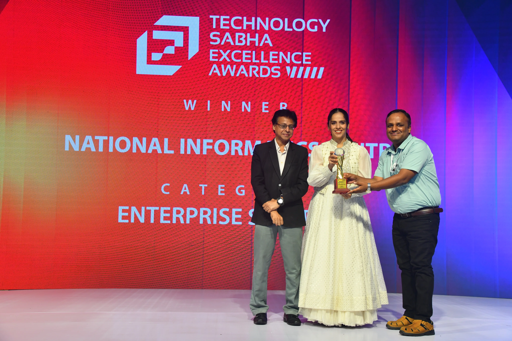
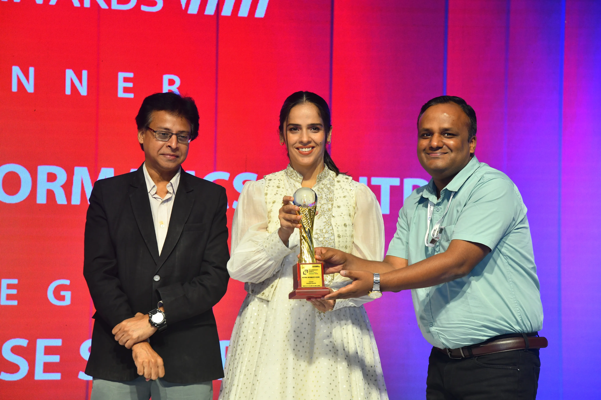
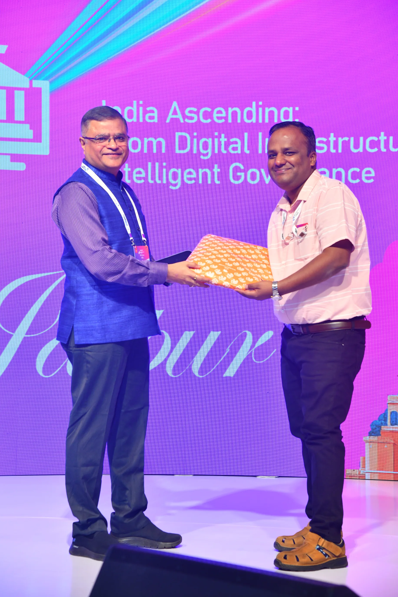

I'm glad to share that Sarvagya – Bharat Public DNS (1.10.10.10), National Informatics Centre's (NIC) public DNS resolver service, has won the Enterprise Security award at the Technology Sabha Excellence Awards 2026 — the 40th edition of India's long-running e-Governance forum, held 21–23 August 2026 at Taj Amer, Jaipur, organised by Express Computer (Indian Express Group).
A Fully Indigenous Effort
Sarvagya is conceived, designed, implemented, and operated end-to-end by NIC. Every layer of the service — from the resolver software to the routing and security policies around it — is built and run in-house on open-source technology. That distinction matters: it's not a rebadged commercial product, but a ground-up engineering effort by a government technical team, which is part of what this award recognises.
Building on open source wasn't a cost shortcut — it was a deliberate choice. It keeps the entire stack auditable, avoids vendor lock-in, and lets the team harden and extend the service on its own terms. Running a national-scale DNS resolver this way, reliably, is a genuine demonstration of technical depth — and this recognition reflects the team's capability as much as the project itself.
Part of India's Internet Resilience Plan
Sarvagya isn't a standalone product — it's one of the major recommendations to come out of a High Level Committee constituted to study and work on India's Internet Resilience plan. The committee, in its report, recommended that India set up its own Public DNS — one that would be highly distributed in nature, anycast-based, and built to scale to handle very large volumes of query traffic.
NIC implemented this recommendation and made sure the resulting service — Sarvagya — is available to government, enterprises, and citizens at large. For a deeper technical look at the service, including its full IP address set (IPv4 and IPv6, primary and secondary) and rationale, see the earlier post: Indian Public DNS (available at 1.10.10.10 and 2409::1).
What Sarvagya Actually Does
Sarvagya is India's own public DNS resolver, reachable at
1.10.10.10 (IPv4) and 2409::1 (IPv6), built as a
sovereign alternative to foreign public resolvers like Google DNS or
Cloudflare DNS. Since launch on 1 January 2024, it has grown to:
- 5B+ DNS queries served daily — up from 3B+ a year earlier, reflecting steadily growing adoption
- 8M+ unique users
- 99.999% uptime
Security is built into the resolver by default, not offered as an add-on:
- DNSSEC validation — protects against cache poisoning and spoofing
- DNS-over-HTTPS (DoH) and DNS-over-TLS (DoT) — encrypts queries in transit
- Malicious-domain blocking — filters known malware/phishing domains at resolution time
The underlying stack is entirely open source: Linux, BIND and Unbound for DNS serving/resolution, and BGP-based anycast routing to send every user's query to the nearest, healthiest node.
The Nomination
Sarvagya was nominated at the Technology Sabha Excellence Awards, competing across categories that included AI, Cloud, Data Centers, IoT, and Governance & Public Service Delivery. The nomination covered the project's design, its security posture, and measurable outcomes — query volume, user adoption, and uptime — as evidence of a national-scale service that performs at par with global commercial DNS providers while keeping Indian users' DNS traffic under domestic control. It was recognised in the Enterprise Security category.
Receiving the Award
The trophy was presented by Saina Nehwal — India's first Olympic medallist in badminton and a Padma Bhushan awardee — at the awards ceremony in Jaipur.

Express Computer, the organisers of Technology Sabha, also posted about the win, congratulating NIC directly on the recognition:
Heartiest Congratulations to @NICMeity, for winning in the 'Enterprise Security' category at the #TechSabha Excellence Awards | 21st August 2026 | Jaipur
— Express Computer (@ExpComputer) August 26, 2026
Beyond the Award: A Question on DNS and Zero Trust
Technology Sabha wasn't just about receiving an award — it was also a chance to engage directly with the DNS security community. During the session "Zero Trust Security: A DNS Perspective," presented by Chirag Nagda, Customer Solution Architect Team Lead – India & SAARC at EfficientIP, on Day Two of the event, I asked a question that's been on my mind for a while: as DNS-over-HTTPS (DoH) combines with TLS 1.3's Encrypted Client Hello (ECH, formerly known as ESNI), how will enterprises continue to filter and inspect network traffic once both the DNS query and the destination hostname in the TLS handshake are encrypted end-to-end?
It's a real problem for enterprise network security teams. Traditionally, two visibility points made traffic filtering possible: the plaintext DNS query (which reveals which domain a device is about to reach) and the Server Name Indication (SNI) field in the unencrypted part of the TLS handshake (which reveals the destination hostname even after DNS resolution). DoH removes the first signal by encrypting DNS queries inside an HTTPS channel, often to a resolver outside the enterprise's control. ECH removes the second by encrypting the SNI itself, so even a network-level firewall watching the TLS handshake can no longer read which site a connection is headed to. Put together, a lot of the traffic categorization and policy enforcement enterprises have relied on for years effectively goes dark.
The session's response, and the broader industry direction, points toward a few practical mitigations: steering managed endpoints toward an enterprise-controlled DoH resolver (and blocking public DoH endpoints at the network edge so devices can't bypass it), enforcing this through group policy/MDM rather than relying on network-layer detection alone, and shifting some enforcement to the endpoint itself — agent-based visibility that sits above the encryption rather than trying to inspect traffic on the wire. This is really the crux of a "Zero Trust" approach to DNS: instead of assuming the network can see everything, you push identity and policy enforcement closer to the client and the resolver, and treat DNS itself as a control point rather than just a lookup service.

Was glad to receive a memento for active participation in the session — a nice bonus on top of what was already a genuinely useful discussion on where DNS security is headed as encryption keeps expanding further up (and around) the stack.
This recognition belongs to the wider NIC team that designs, runs, and keeps Sarvagya secure and available around the clock — the engineers, admins, and operations staff whose work rarely gets a public spotlight. It's a good marker of where the project stands today, and motivation to keep pushing on the parts that still need work.